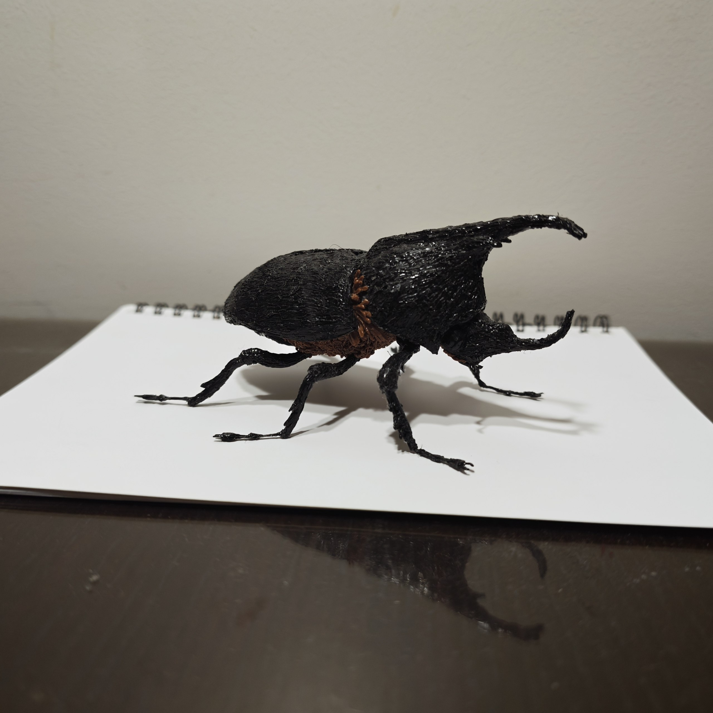
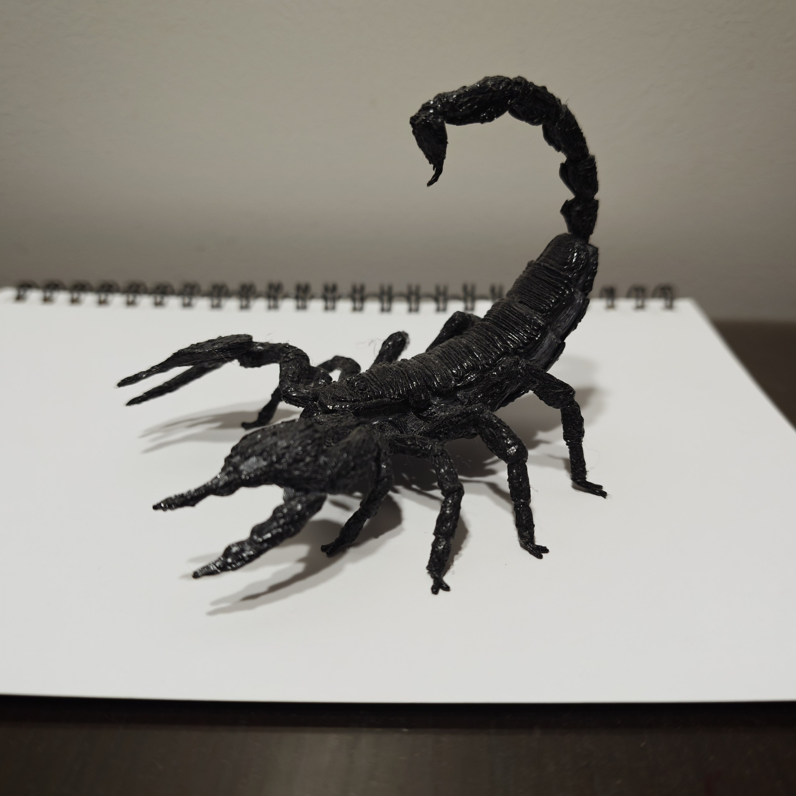
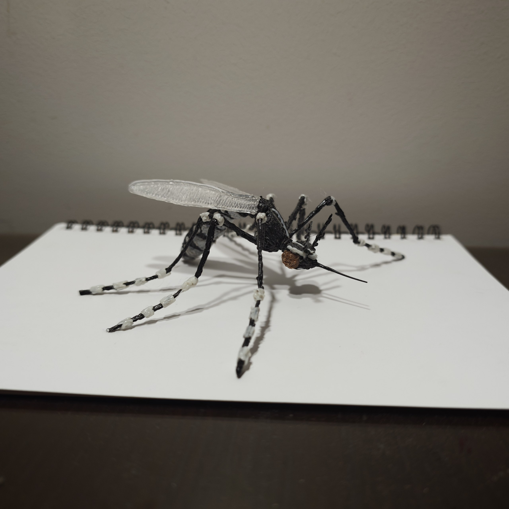
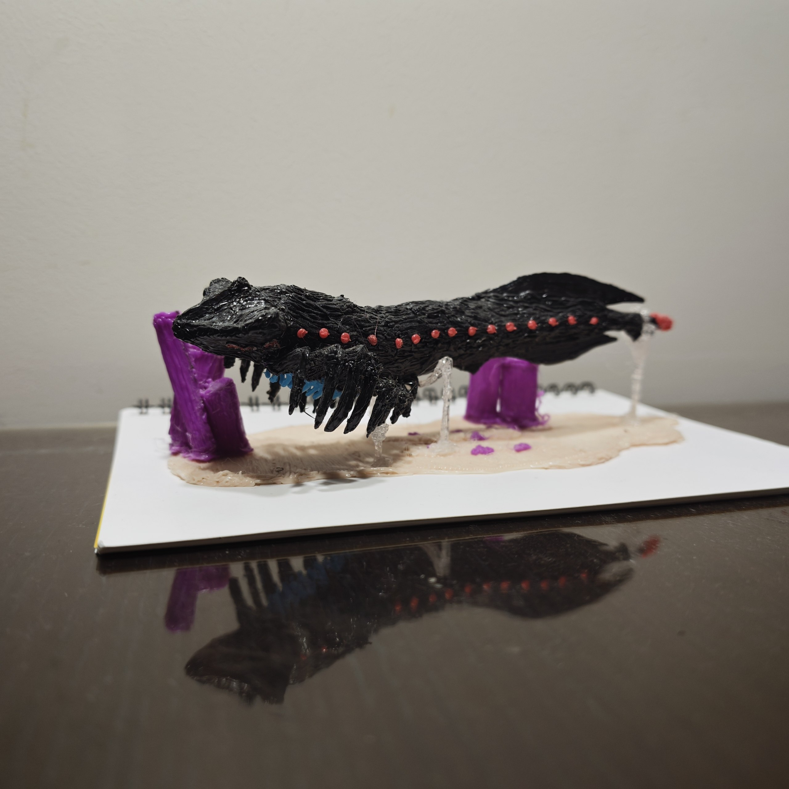
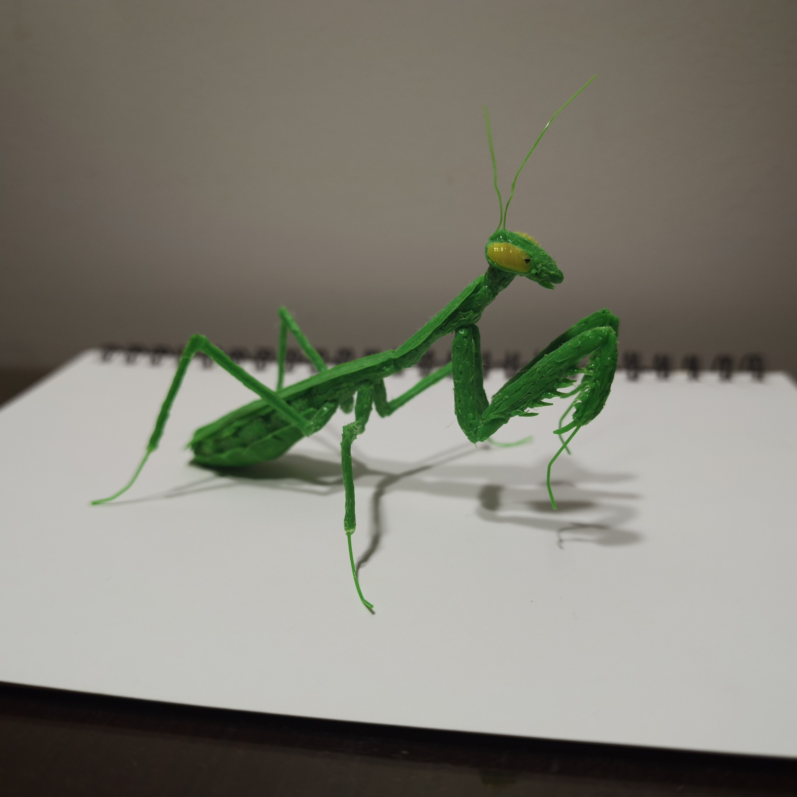
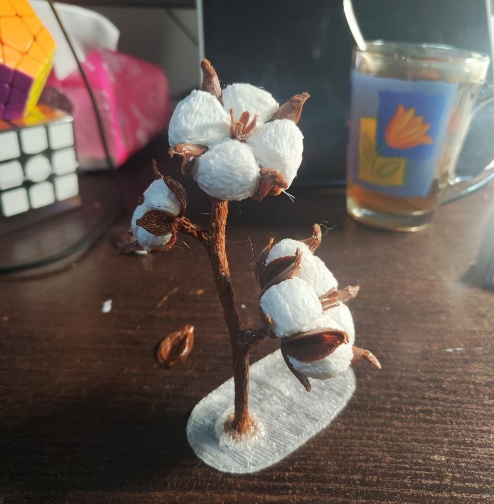
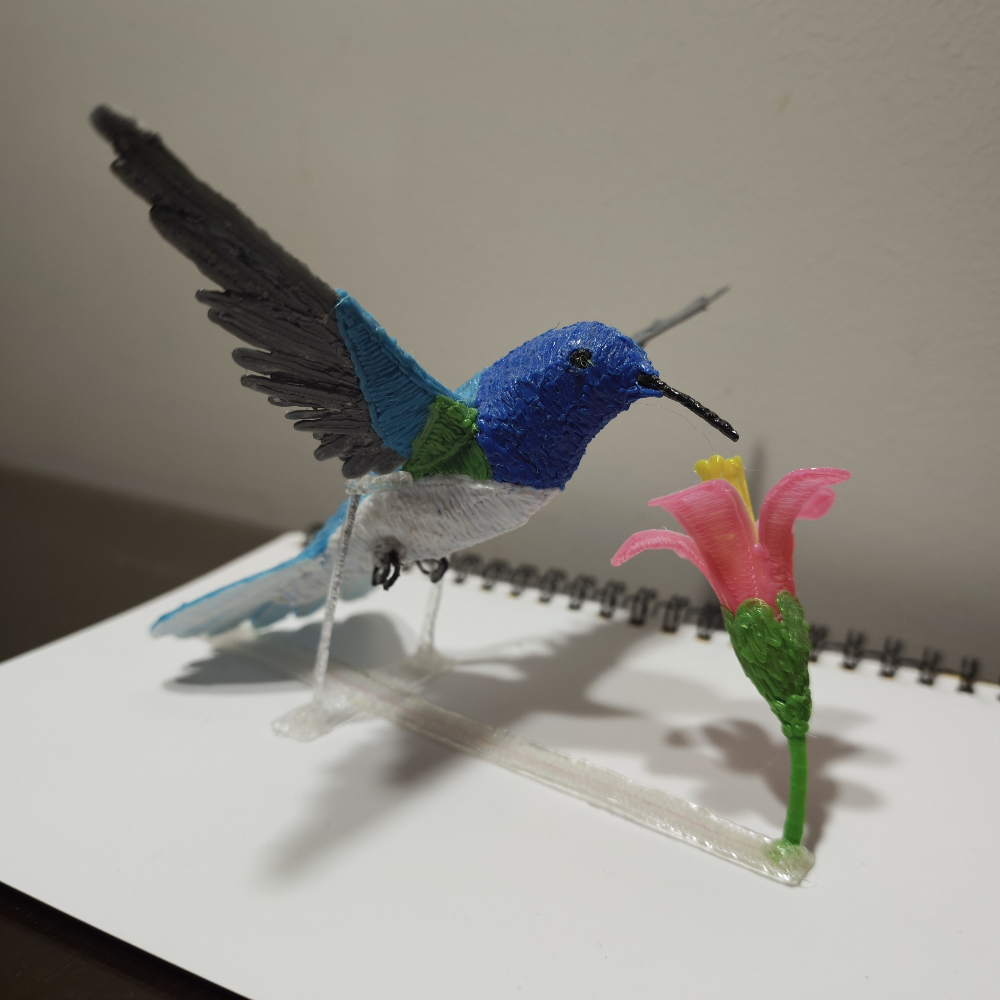
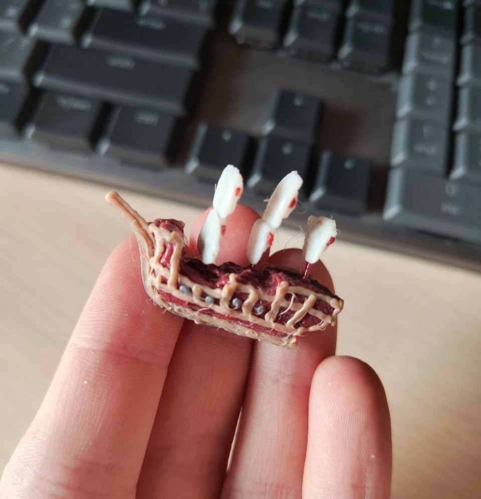
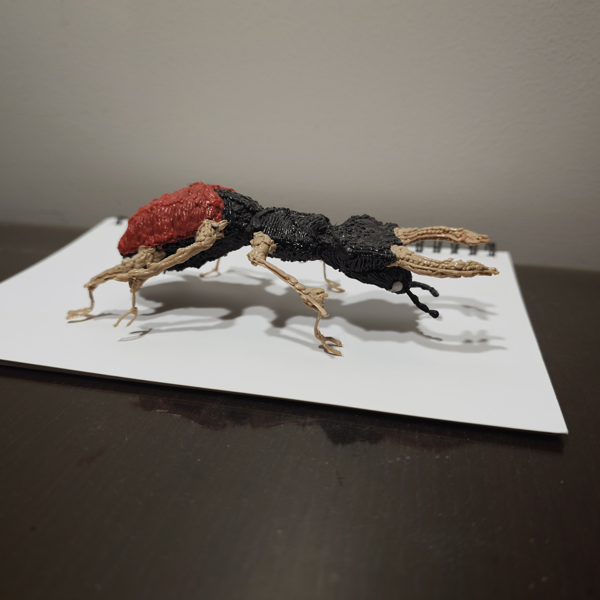
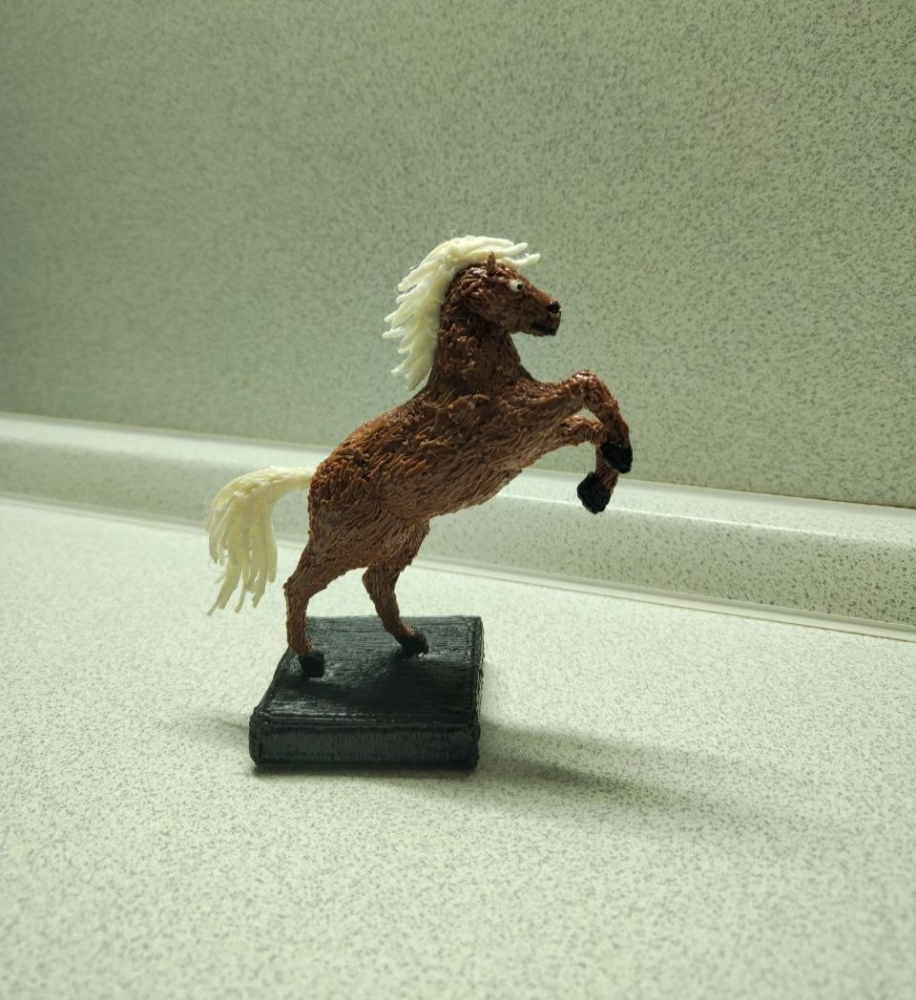

Жук-носорог
Одна из самых трудоёмких и проработанных моделей с вниманием к мельчайшим деталям.
Вид: Xylotrupes gideon
Время рисования: 20 ч.
Размер: 12.5 см × 10 см × 6 см

Одна из самых трудоёмких и проработанных моделей с вниманием к мельчайшим деталям.
Вид: Xylotrupes gideon
Время рисования: 20 ч.
Размер: 12.5 см × 10 см × 6 см

Самая трудоёмкая и проработанная модель благодаря созданию множества отдельных сегментов.
Время рисования: 24 ч.
Размер: 9.5 см × 8.5 см × 7.5 см

Референс: комар из игры Grounded
Время рисования: 4–5 ч.
Размер: 10 см × 13.5 см × 4 см

Источник: Subnautica: Below Zero
Время рисования: 7 ч.
Размер: 18 см × 9.5 см × 5.5 см

Время рисования: 10 ч.
Размер: 10 см × 7.5 см × 5.5 см

Нарисованы в качестве подарка.
Время рисования: 8 ч.
Высота: 12 см

Время рисования: 6 ч.
Размах крыльев: 16 см
Длина с хвостом: 11.5 см

Нарисован для небольшой диорамы в качестве подарка и является одной из самых мелких работ.
Размер: 3 см × 2.5 см × 1 см

Одна из самых первых моделей.
Время рисования: 7 ч.
Размер: 15 см × 8 см × 4.5 см

Пережил целых три этапа создания: сначала нарисован плоским по трафарету, после перерисован объёмным, а спустя продолжительное время был найден поломанным и отреставрирован до текущего состояния.